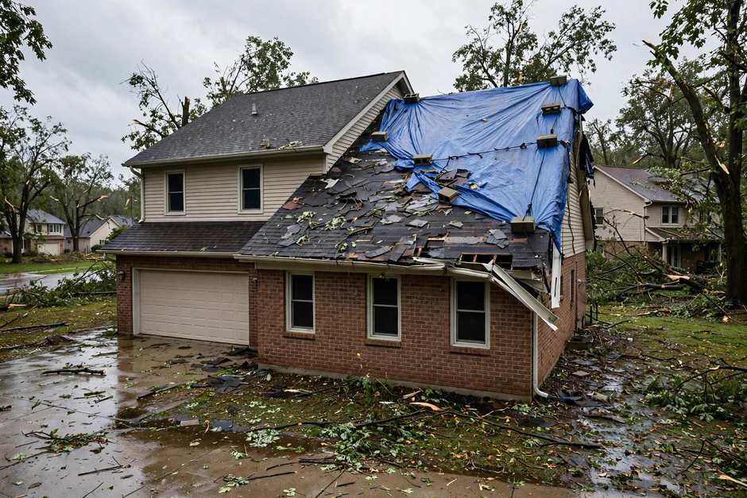

Emergency roof repair in Des Plaines: what to do first
Water coming through a ceiling, or a storm opening a roof, calls for interior control first and roof decisions second. Here is the order of steps, in general terms.

When water is coming through a ceiling or a storm has opened part of a roof, the first job is inside the house: limit the water damage, stay off a wet or icy roof, and record what happened. Roof work itself — tarping, patching, or permanent repair — is a separate decision, and this guide does not promise how quickly any roofer can attend.
This guide covers the first steps in general terms, why late fall and early winter are hard on Des Plaines roofs, what to ask about response and cost when calling, and the mistakes that make an emergency worse. It is educational guidance, not a promise of service.
What should you do in the first 30 minutes of a roof emergency?
Start inside. Place containers under active drips, move furniture and electronics away from the wet area, and lay towels along the path water is taking. If water is near light fixtures or outlets, keep clear of the area and treat electrical safety as the priority.
Next, look for the source without climbing on the roof. From inside, note where water is entering — near an exterior wall, under a valley, below a chimney or skylight — and take dated photographs of the interior signs. From the ground outside, look for missing shingles, fallen branches on the roof, and displaced flashing, using binoculars if needed.
- Control interior water. Containers, towels, and moving belongings out of the wet area come first.
- Stay off the roof. Wet and icy shingles are dangerous, and walking a damaged roof can make the damage worse.
- Document with dates. Photograph interior stains, drips, and any visible exterior damage, and note the date and time of the storm or first sign.
- Call during listed hours. Describe what is happening, what you can see, and whether water is still coming in, and ask what the roofer can do and when.
Temporary interior measures — containers, towels, and plastic sheeting over belongings — limit damage while decisions are made. They are not roof repairs, and they do not stop water entering at the roof.
Why late fall and early winter are hard on Des Plaines roofs
Des Plaines winters combine snow, freezing nights, and repeated freeze–thaw cycles. At Chicago O’Hare, the nearest official station, the 1991–2020 normals show 38.4 inches of snowfall a year, with about 121 nights at or below freezing against about 43 days that stay below freezing all day. November averages 1.8 inches of snow and December 7.6 inches in the same normals — the start of the ice-dam core season, described as December through March as a reasoned characterisation, not a National Weather Service-defined season.
Freeze–thaw cycling works on every joint in a roof: flashing, boots, valleys, and shingle seals expand and contract, and small gaps open a little further each cycle. Ice dams add a second mechanism — meltwater refreezing at the eave and backing up under shingles — which is why winter leaks often appear near exterior walls rather than under the ridge.
Most Des Plaines homes were built before 1980 (median year built 1966, ACS 2019–2023), so many roofs are second- or third-generation replacements over original decking of varying condition, with prior layers and added junctions. Structure age is not roof age, but older stock means an inspection is more likely to find layered history — and that matters when deciding between a patch and a larger repair.
What to ask about response when you call
This site makes no response-time claim, and no roofer’s response time should be assumed from advertising language. When calling about an emergency, ask directly: whether the business attends emergency calls, what hours it attends them, what temporary measures it provides, and what happens if the work cannot be done the same day.
Stabilisation, as described in Chicago-area sources generally, can include heavy-duty tarping, temporary patches, debris clearing, and photo documentation, with permanent repair scheduled separately. Whether any particular business provides each of those is a question for the call — tarping is a temporary measure, not a permanent fix, and it does not by itself settle an insurance question.
If water is still coming in and no roofer can attend, interior control and documentation remain the useful steps. Do not climb onto a wet, icy, or storm-damaged roof to attempt a temporary cover; the fall risk is real, and a poorly placed cover can trap water or damage shingles further.
What emergency work costs: what guides publish
No emergency price is published on this site as this business’s price. Published guides give conflicting figures for temporary tarping, and they describe different job sizes — which is why they must not be averaged into a single number.
- Chicago Roofing Team guide: emergency tarping $400–$800 depending on area and access.
- Dry Bros, Chicago (described by the source as industry-typical figures, not a quote): small tarp (up to 200 sq ft) $500–$1,200; large or steep (200–800 sq ft) $1,200–$3,000; after-hours or hazardous-access surcharge +$200–$600.
Those are third-party guide figures, not this business’s prices, and they cover temporary measures only. Permanent repair pricing comes from a written on-site estimate after an inspection. When calling, ask how temporary work is charged, whether it is separate from the permanent repair, and what the written estimate will cover.
Common mistakes homeowners make during a roof emergency
- Climbing on the roof. Wet, icy, or wind-damaged roofs are fall hazards. Ground-level observation and interior documentation are safer.
- Sealing the stain instead of finding the source. Water travels along decking and framing; the ceiling stain and the entry point are often in different places.
- Waiting without documenting. Dated photographs and notes taken promptly are useful whatever happens next, including with an insurer.
- Assuming insurance will pay. Coverage depends on the policy and the cause of damage. The homeowner files the claim; a contractor’s lawful role is an estimate, documentation, and conferring with the insurer’s representative — not representing the homeowner or filing the claim.
- Signing on the spot under pressure. Emergency pressure is real, but a written scope and a chance to read it still matter. Illinois roofing contracts must include specific content, including a 72-hour rescission clause and a deductible non-waiver statement (225 ILCS 335 §5.5).
When to call a professional
Call a roofer when water is actively entering, when shingles or flashing are visibly displaced, when a tree or branch has struck the roof, or when an ice-dam leak is running inside. Describe what is happening and ask what the roofer can do and when — including whether temporary stabilisation is offered and how it is charged.
For background on what an inspection covers, see the roof inspection page, and for hail and wind damage specifically, the storm damage roof repair page. The emergency roof repair page explains the topic in more detail.
Frequently Asked Questions
What should I do first for emergency roof repair in Des Plaines?
Control water inside first: containers under drips, belongings moved, towels along the water’s path. Stay off the roof, photograph interior and visible exterior damage with dates, and call during listed hours to describe what is happening and ask what the roofer can do and when.
Who do I call for emergency roof repair in Des Plaines IL?
Call a roofing contractor during its listed hours and describe the situation. WP Exterior Inc can be reached at (224) 802-4866 during listed hours: Monday and Tuesday 7:30 AM–7:00 PM, Wednesday to Friday 7:30 AM–7:30 PM, and Saturday 8:30 AM–5:00 PM, closed Sunday.
How fast can a roofer respond in Des Plaines?
This site makes no response-time claim. Ask directly when calling: whether emergency calls are attended, at what hours, what temporary measures are provided, and what happens if the work cannot be done the same day.
Does emergency roof repair cost more in Des Plaines Illinois?
No emergency price is published here as this business’s price. Published Chicago-area guides give conflicting tarping ranges for different job sizes, and permanent repair pricing comes from a written on-site estimate. Ask how temporary work is charged when you call.
Will my insurance cover emergency roof repair in Des Plaines?
Coverage depends on the policy and the cause of damage, and no outcome is promised here. The homeowner files the claim; a contractor may provide an estimate and documentation and confer with the insurer’s representative. Check the policy for deadlines and requirements.
Get help with Roofing in Des Plaines
If water is coming in or storm damage has opened part of a roof, start with interior control and documentation, then call WP Exterior Inc at (224) 802-4866 during listed hours to describe what is happening and ask what can be done.